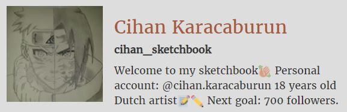

Ik ben Cihan Karacaburun en ben achttien jaar oud. Ik woon samen met m'n ouders, een oudere broer en twee zusjes in Amsterdam-West. Mijn hobbys zijn gamen en tekenen. Als ik game dan speel ik League of legends. Als ik teken dan teken ik anime. Dat zijn Japanse tekenfilms. 